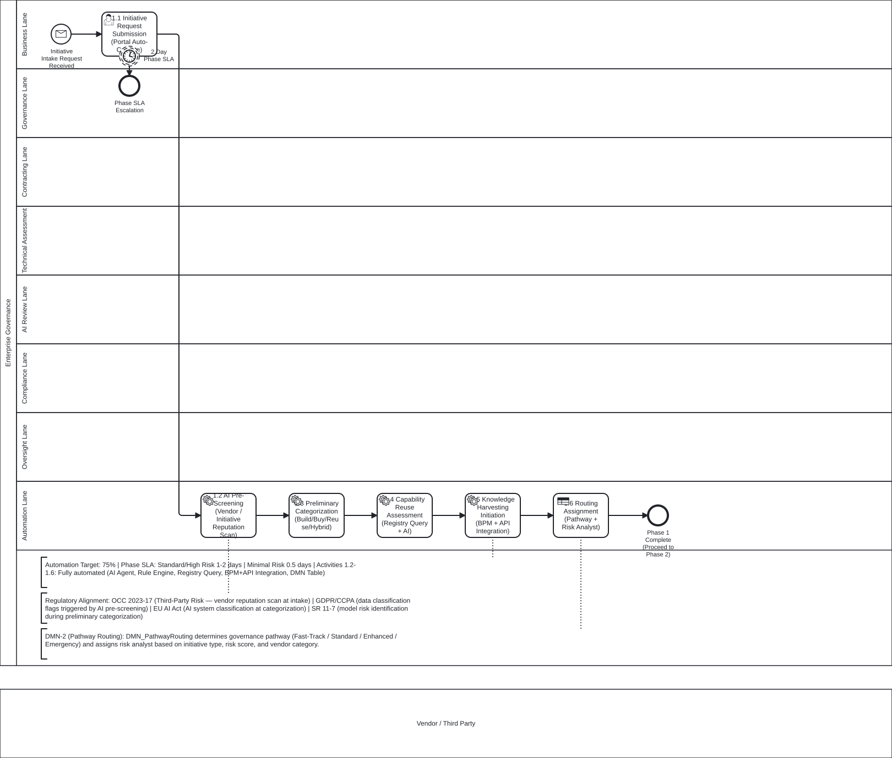
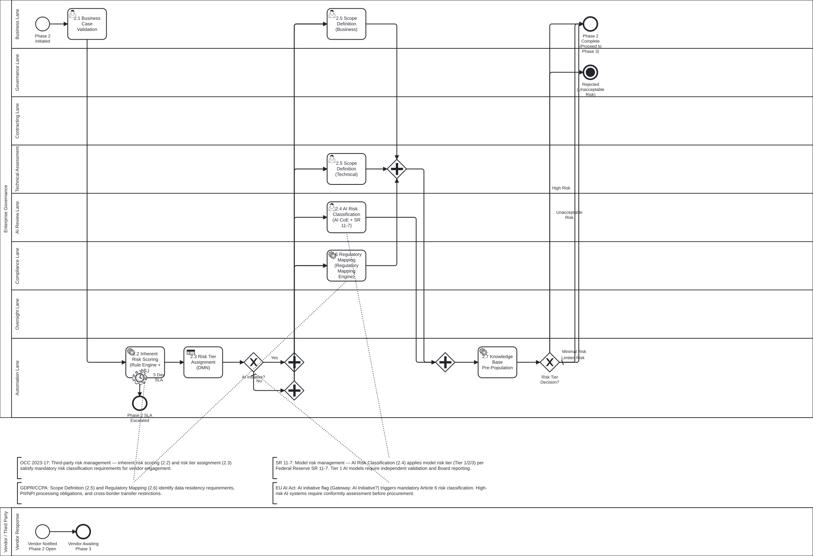
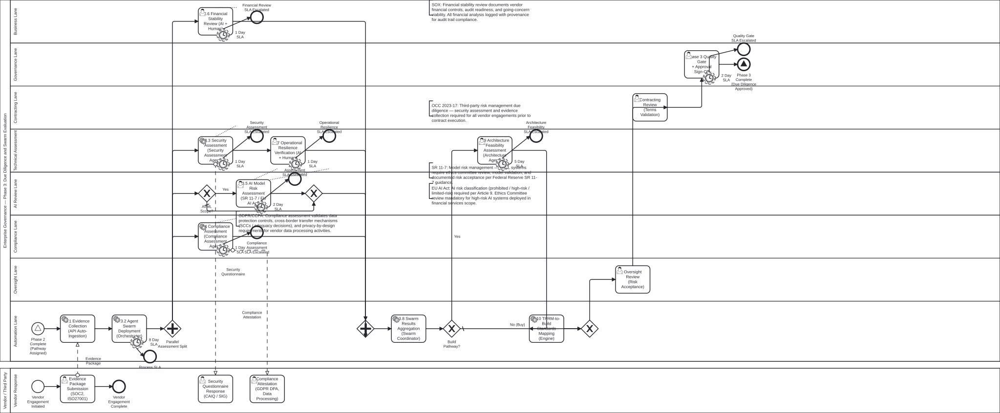
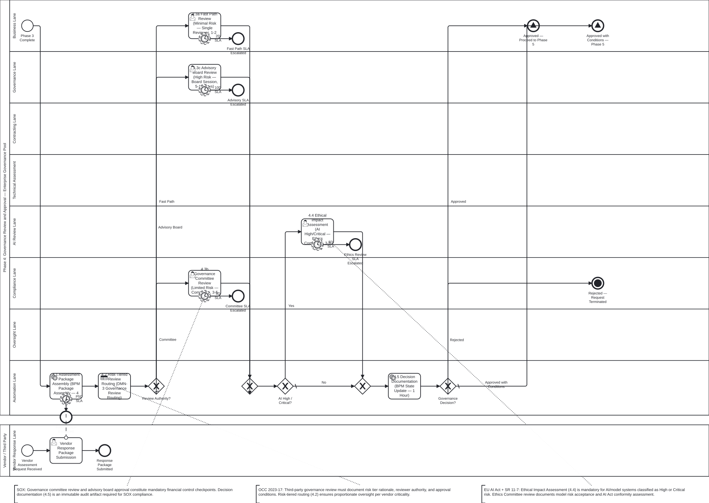
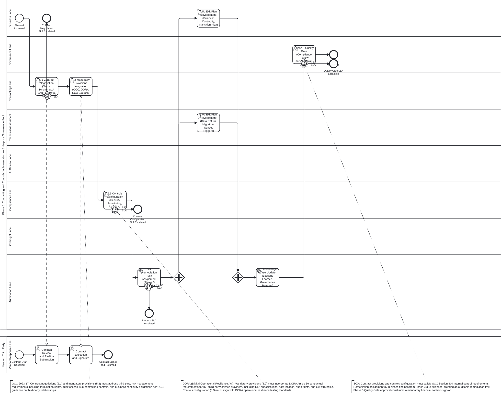
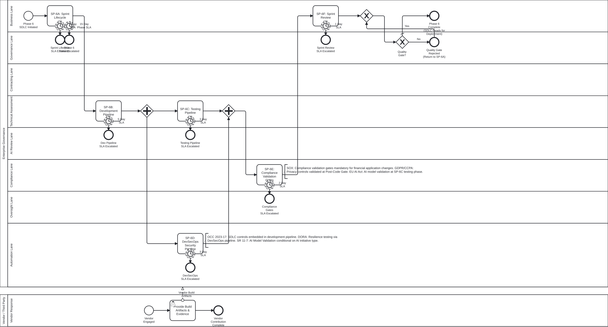
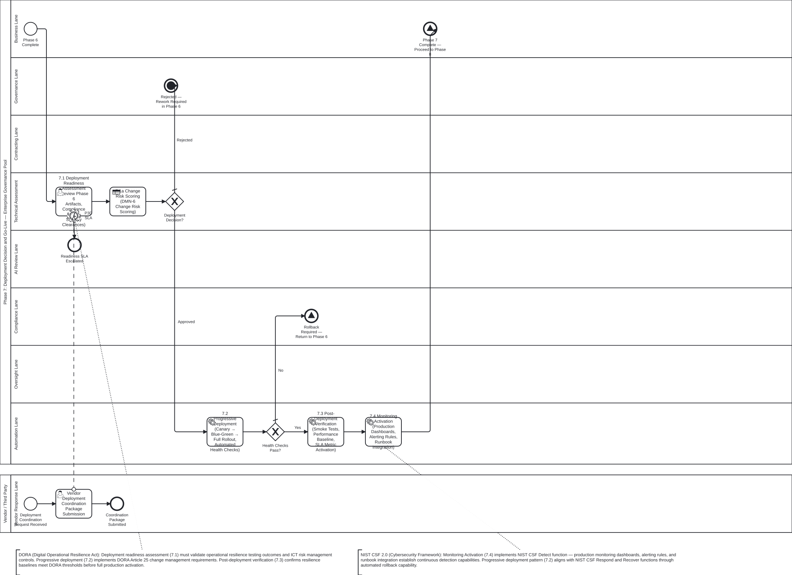
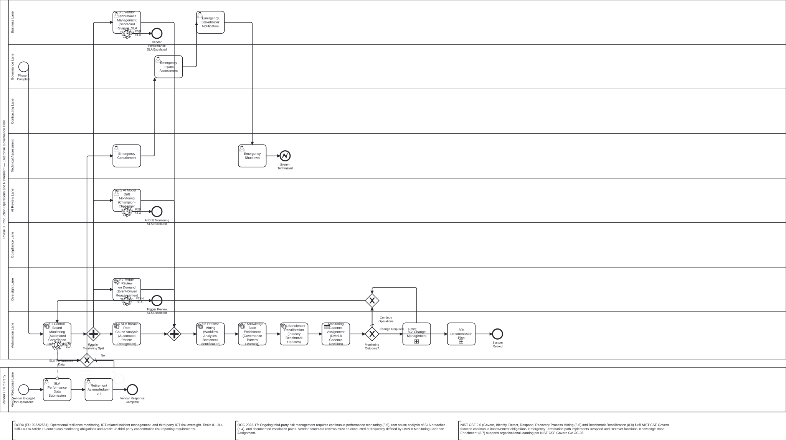
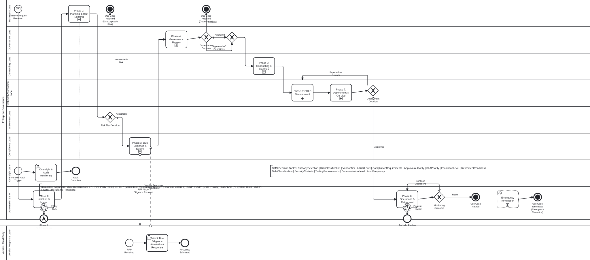
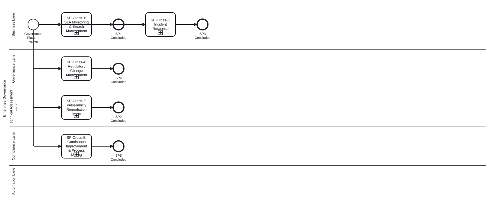

A comprehensive, risk-tiered governance framework spanning Initiation through Operations & Retirement. Built on BPMN 2.0, DMN 1.3, and Camunda Platform 7.
Transform enterprise software governance from a manual, sequential bottleneck into a risk-intelligent, agent-augmented lifecycle that accelerates delivery while strengthening compliance.
Four risk tiers (Minimal, Limited, High, Unacceptable) drive SLA targets, automation levels, review authorities, and monitoring cadence.
Eight decision tables replace embedded gateway logic. Every routing choice is auditable, version-controlled, and independently testable.
AI agent swarms handle evidence collection, risk scoring, compliance checks, and monitoring—with confidence-based escalation to human reviewers.
Fast-Track, Build, Buy, and Hybrid pathways share a common governance backbone with pathway-specific activities in Phases 3, 5, and 6.
Governance intensity scales with risk tier. Minimal-risk items move through fast-track; high-risk items get full committee review.
Business rules live in DMN tables, not BPMN gateway conditions. Separation of process flow from decision logic.
Lane assignments enforce 1st Line (Business), 2nd Line (Risk/Compliance), and 3rd Line (Audit) separation.
Five cross-cutting sub-processes run throughout the lifecycle—SLA monitoring, vulnerability remediation, incident response, regulatory change, and continuous improvement.
Every phase enriches a shared knowledge base. Agent swarms leverage accumulated intelligence for faster, more accurate assessments.
BPMN 2.0 + DMN 1.3 on Camunda 7 provides complete process execution history with regulatory annotation traceability.
| Phase | Sub-Process ID | SLA (Standard) | Automation | Key Decision |
|---|---|---|---|---|
| 1. Initiation & Intake | SP-Phase1-Intake | 1–2 days | 75% | Pathway routing (DMN-2) |
| 2. Planning & Risk Scoping | SP-Phase2-Planning | 3–5 days | 60% | Risk tier (DMN-1) |
| 3. Due Diligence & Swarm | SP-Phase3-DueDiligence | 5–8 days | 70% | Swarm deployment |
| 4. Governance Review | SP-Phase4-GovernanceReview | 3–5 days | 40% | Review routing (DMN-3) |
| 5. Contracting & Controls | SP-Phase5-Contracting | 5–7 days | 50% | Controls config |
| 6. SDLC Development | SP-Phase6-SDLC | 10–15 days | 55% | 6 nested sub-processes |
| 7. Deployment & Go-Live | SP-Phase7-Deployment | 2–3 days | 60% | Deployment decision |
| 8. Operations & Retirement | SP-Phase8-Operations | Ongoing | 65% | Monitoring cadence (DMN-8) |
3 Terminal End Events: End_Retired End_Terminated End_Rejected
SLA: 1–2 days | Automation: 75% | Sub-Process: SP-Phase1-Intake
| # | Activity | Lane |
|---|---|---|
| 1.1 | Request Submission | Business |
| 1.2 | AI Pre-Screening | Automation |
| 1.3 | Preliminary Categorization | Automation |
| 1.4 | Capability Reuse Assessment | Automation |
| 1.5 | Knowledge Harvesting | Automation |
| 1.6 | Routing Assignment | Automation |
DMN: DMN-2 Pathway Routing at Activity 1.6

Phase 1: Initiation & Intake Process Model
SLA: 3–5 days | Automation: 60% | Sub-Process: SP-Phase2-Planning
| # | Activity | Lane |
|---|---|---|
| 2.1 | Business Case Validation | Business |
| 2.2 | Inherent Risk Scoring | Automation |
| 2.3 | Risk Tier Assignment | Automation |
| 2.4 | AI Risk Classification | AI Review |
| 2.5 | Scope Definition | Business + Tech |
| 2.6 | Regulatory Mapping | Compliance |
| 2.7 | Knowledge Base Pre-Population | Automation |
DMN: DMN-1 Risk Tier Classification at Activity 2.3
XOR: Unacceptable Risk → End_Rejected | High/Limited/Minimal → Phase 3

Phase 2: Planning & Risk Scoping Process Model
SLA: 5–8 days | Automation: 70% | Sub-Process: SP-Phase3-DueDiligence
| # | Activity | Lane |
|---|---|---|
| 3.1 | Evidence Collection | Automation |
| 3.2 | Agent Swarm Deployment | Automation |
| 3.3 | Security Assessment | Technical |
| 3.4 | Compliance Assessment | Compliance |
| 3.5 | AI Model Risk Assessment | AI Review |
| 3.6 | Financial Stability Review | Business |
| 3.7 | Operational Resilience | Technical |
| 3.8 | Swarm Results Aggregation | Automation |
| 3.9 | Architecture Feasibility | Technical |
| 3.10 | TPRM-to-Build Mapping | Automation |
Activities 3.1–3.8 run in parallel (Buy) or sequentially (Build). 3.9–3.10 are Build-pathway specific.

Phase 3: Due Diligence & Swarm Evaluation
SLA: 3–5 days | Automation: 40% | Sub-Process: SP-Phase4-GovernanceReview
| # | Activity | Lane |
|---|---|---|
| 4.1 | Assessment Package Assembly | Automation |
| 4.2 | Risk-Tiered Review Routing | Automation |
| 4.3a | Fast Path Review | Business |
| 4.3b | Governance Committee Review | Compliance + Business |
| 4.3c | Advisory Board Review | All Lanes |
| 4.4 | Ethical Impact Assessment | AI Review |
| 4.5 | Decision Documentation | Automation |
DMN: DMN-3 Governance Review Routing at Activity 4.2
XOR: Approved → Phase 5 | Approved w/ Conditions → Phase 5 | Rejected → End_Rejected

Phase 4: Governance Review & Approval
SLA: 5–7 days | Automation: 50% | Sub-Process: SP-Phase5-Contracting
| # | Activity | Lane |
|---|---|---|
| 5.1 | Contract Negotiation | Contracting |
| 5.2 | Mandatory Provisions | Contracting |
| 5.3 | Controls Configuration | Compliance |
| 5.4 | Remediation Task Assignment | Automation |
| 5.5 | Exit Plan Development | Business + Tech |
| 5.6 | Knowledge Base Update | Automation |

Phase 5: Contracting & Controls
SLA: 10–15 days | Automation: 55% | Sub-Process: SP-Phase6-SDLC
The most complex phase with 6 nested sub-processes:
3 activities: Story refinement, capacity planning, sprint goal setting
4 activities including self-healing loop for build failures
5 activities including AI model validation for AI-classified assets
7 parallel stages: Pre-Commit through Production Security Monitoring
5 gates: Post-Requirements, Post-Design, Post-Code, Post-Test, Pre-Deployment
3 activities: Demo, retrospective, knowledge capture

Phase 6: SDLC Development & Testing (Level 1)
SLA: 2–3 days | Automation: 60% | Sub-Process: SP-Phase7-Deployment
| # | Activity | Lane |
|---|---|---|
| 7.1 | Deployment Readiness Assessment | Technical |
| 7.2 | Progressive Deployment | Automation |
| 7.3 | Post-Deployment Verification | Automation |
| 7.4 | Monitoring Activation | Automation |
XOR: Health Checks Pass → Phase 8 | Rejected → Loop back to Phase 6

Phase 7: Deployment & Go-Live
SLA: Ongoing | Automation: 65% | Sub-Process: SP-Phase8-Operations
| # | Activity | Lane |
|---|---|---|
| 8.1 | Control-Based Monitoring | Automation |
| 8.2 | AI Model Drift Monitoring | AI Review |
| 8.3 | Trigger Review on Demand | Automation |
| 8.4 | SLA Breach Root Cause | Automation |
| 8.5 | Vendor Performance Mgmt | Business |
| 8.6 | Process Mining | Automation |
| 8.7 | Knowledge Base Enrichment | Automation |
| 8.8 | Benchmark Recalibration | Automation |
DMN: DMN-6 Change Risk, DMN-8 Monitoring Cadence
XOR: Continue → Loop | Change → 8C | Retire → 8R
3 activities: Impact assessment, change execution, validation. DMN-6 for change risk scoring.
7 activities through End_Retired: Data migration, contract termination, knowledge archival.
5 activities through End_Terminated: Triggered by compliance breach or security incident.

Phase 8: Operations & Retirement
Process ID: ESG-E2E-Master-v4.0 — The top-level end-to-end governance flow connecting all 8 phases as collapsed sub-processes with XOR decision gateways and timer boundary events.

Master Orchestrator: 8-Phase Sequential Flow with 3 Terminal End Events
Eight decision tables drive all governance routing. Every XOR gateway with business logic references a DMN table—no embedded conditions.
| ID | Name | Hit Policy | Inputs | Used In |
|---|---|---|---|---|
| DMN-1 | Risk Tier Classification | UNIQUE | 5 risk scores (data, regulatory, operational, AI, 3rd-party) | Phase 2 (2.3) |
| DMN-2 | Pathway Routing | UNIQUE | Reuse score, build/buy analysis, capacity, alignment, time-to-value | Phase 1 (1.6) |
| DMN-3 | Governance Review Routing | UNIQUE | Risk tier | Phase 4 (4.2) |
| DMN-4 | Automation Tier Assignment | UNIQUE | Risk tier | Cross-cutting |
| DMN-5 | Agent Confidence Escalation | FIRST | Confidence score, risk tier | Cross-cutting |
| DMN-6 | Change Risk Scoring | UNIQUE | Complexity, dependency, deployment, history, rollback | Phase 8 (8C) |
| DMN-7 | Vulnerability Remediation Routing | UNIQUE | CVSS score, application tier | Cross-cutting (SP-Cross-2) |
| DMN-8 | Monitoring Cadence Assignment | UNIQUE | Risk tier, asset type | Phase 8 (8.1) |
DMN-2 (Pathway Routing) assigns each initiative to one of four pathways based on capability reuse, build/buy analysis, organizational capacity, strategic alignment, and time-to-value.
Pre-approved categories with existing vendor relationships. Minimal risk only. Abbreviated Phases 3–5.
Internal development pathway. Full SDLC (Phase 6) with 6 nested sub-processes. Architecture feasibility in Phase 3.
Vendor procurement pathway. Agent swarm due diligence (Phase 3). Full contracting (Phase 5).
Combined build + buy. Both Build and Buy activities in Phases 3, 5, 6. Highest complexity.
DMN-1 assigns risk tiers based on 5 dimensions. The tier drives SLA targets, automation levels, review authority, and monitoring cadence throughout the lifecycle.
| Tier | Composite Score | Cycle Time | Review Authority | Monitoring |
|---|---|---|---|---|
| Unacceptable | ≥ 4.0 | Auto-Rejected | Auto-Reject at Phase 2 | N/A |
| High | 3.0 – 3.9 | 46–74 days | Advisory Board (All Lanes) | Weekly |
| Limited | 2.0 – 2.9 | 29–45 days | Governance Committee | Monthly |
| Minimal | < 2.0 | 13.5–23 days | Fast Path (Business Owner) | Quarterly |
Classification level of data processed
Number and severity of applicable regulations
Business criticality and dependency depth
Model sophistication and autonomy level
Vendor dependency and subcontracting tiers
| Lane | candidateGroups | Defense Line |
|---|---|---|
| Business Lane | business-lane | 1st Line |
| Governance Lane | governance-lane | 2nd Line |
| Contracting Lane | contracting-lane | 1st/2nd Line |
| Technical Assessment | technical-assessment | 2nd Line |
| AI Review Lane | ai-review | 2nd Line |
| Compliance Lane | compliance-lane | 2nd Line |
| Oversight Lane | oversight-lane | 3rd Line |
| Automation Lane | automation-lane | 1st Line |
| Lane | candidateGroups | Defense Line |
|---|---|---|
| Vendor Response Lane | vendor-response | N/A (External) |
Business Lane, Contracting Lane, Automation Lane own and manage risk day-to-day.
Governance, Technical, AI Review, Compliance lanes provide independent oversight.
Oversight Lane provides independent assurance over 1st and 2nd line activities.
| Phase | Business | Governance | Contracting | Technical | AI Review | Compliance | Oversight | Automation | Vendor |
|---|---|---|---|---|---|---|---|---|---|
| 1. Intake | R | I | - | - | - | - | - | A | - |
| 2. Planning | R | C | - | C | R | R | I | A | - |
| 3. Due Diligence | C | I | - | R | R | R | I | A | R |
| 4. Governance | R | A | - | C | R | R | I | C | - |
| 5. Contracting | C | I | R/A | C | - | R | I | C | R |
| 6. SDLC | C | I | - | R/A | C | C | I | R | C |
| 7. Deployment | C | I | - | R | - | C | I | A | - |
| 8. Operations | R | C | C | C | R | C | A | R | R |
R = Responsible, A = Accountable, C = Consulted, I = Informed
11 regulatory frameworks mapped across the 8-phase lifecycle with mandatory text annotations in every BPMN model.
Third-party risk management. Phases 2, 3, 5, 8.
Model risk management. AI governance in Phase 2, 3.
Financial controls, audit trails. Phase 4, 5.
Data protection, classification. Phase 2, 3.
AI system risk classification. Phase 2, 3, 8.
Digital operational resilience. Phase 5, 7, 8.
Cybersecurity framework. Phase 3, 6, 7.
Information security management. Phase 3, 6.
Records retention. Phase 5, 8.
Operational resilience. Phase 7, 8.
Financial services AI risk management. Phase 2, 3, 8.
| Framework | Ph 1 | Ph 2 | Ph 3 | Ph 4 | Ph 5 | Ph 6 | Ph 7 | Ph 8 | Cross-Cut |
|---|---|---|---|---|---|---|---|---|---|
| OCC 2023-17 | - | ✓ | ✓ | - | ✓ | - | - | ✓ | SP-1,2 |
| SR 11-7 | - | ✓ | ✓ | - | - | - | - | ✓ | SP-4 |
| SOX | - | - | - | ✓ | ✓ | - | - | - | - |
| GDPR/CCPA | - | ✓ | ✓ | - | - | - | - | - | - |
| EU AI Act | - | ✓ | ✓ | - | - | - | - | ✓ | SP-4 |
| DORA | - | - | - | - | ✓ | - | ✓ | ✓ | SP-3 |
| NIST CSF 2.0 | - | - | ✓ | - | - | ✓ | ✓ | - | SP-2,3 |
| ISO 27001 | - | - | ✓ | - | - | ✓ | - | - | - |
| SEC 17a-4 | - | - | - | - | ✓ | - | - | ✓ | - |
| BCBS d577 | - | - | - | - | - | - | ✓ | ✓ | SP-1 |
| FS AI RMF | - | ✓ | ✓ | - | - | - | - | ✓ | SP-5 |
Third-Party Risk Management spans Phases 2–8 with agent swarm acceleration in Phase 3 and continuous vendor monitoring in Phase 8.
5-dimension risk assessment drives vendor tier classification and due diligence depth.
Parallel assessment agents: Security (3.3), Compliance (3.4), Financial (3.6), Operational (3.7). Automated evidence collection (3.1).
Mandatory provisions, SLA requirements, exit plan development, OCC 2023-17 compliance.
Vendor performance management (8.5), benchmark recalibration (8.8), risk-tiered monitoring cadence (DMN-8).
| Agent | Role | Confidence |
|---|---|---|
| Evidence Collector | Gather vendor documentation | Auto ≥ 0.90 |
| Security Assessor | Vulnerability and posture analysis | Review ≥ 0.70 |
| Compliance Checker | Regulatory alignment verification | Review ≥ 0.70 |
| Financial Analyst | Stability and viability assessment | Review ≥ 0.75 |
| Aggregator | Synthesize swarm findings | Review ≥ 0.80 |
DMN-5 (Agent Confidence Escalation) routes agent outputs: Autonomous (≥ 0.90), Human Review (0.70–0.89), Manual Takeover (< 0.70).
AI agents augment human governance at every phase, with confidence-based escalation ensuring appropriate human oversight.
These event sub-processes run throughout the lifecycle, triggered from any phase.
Progressive escalation at 50%, 75%, 90%, 100% thresholds. Timer events on every phase. Breach triggers root cause analysis.
DMN-7 routes by CVSS score and app tier. 4-tier SLA matrix. Autonomous patching for low-risk findings.
P1–P4 severity classification. Security alert triggers containment, investigation, remediation, and post-incident review.
90-day regulatory horizon scanning workflow. Impact assessment, gap analysis, control updates, and compliance verification.
8 improvement cycles: process mining, bottleneck analysis, optimization, measurement. Quarterly + continuous triggers.

Cross-Cutting Event Sub-Processes
| Risk Tier | Baseline (Industry) | Target | Compression |
|---|---|---|---|
| Minimal | 90–120 days | 13.5–23 days | 75–85% |
| Limited | 90–120 days | 29–45 days | 62–68% |
| High | 90–120 days | 46–74 days | 38–49% |
Every phase enriches a shared knowledge base that accelerates subsequent governance decisions and agent accuracy.
Initial population from request metadata, prior assessments, vendor intelligence.
Risk assessment patterns, regulatory mapping templates, capability matrices.
Contract terms, control configurations, exit plan templates.
Operational patterns, incident learnings, performance benchmarks.
| Category | Source Phases |
|---|---|
| Vendor Intelligence | 3, 5, 8 |
| Risk Patterns | 2, 3, 4 |
| Compliance Templates | 2, 5, 6 |
| Architecture Decisions | 3, 6, 7 |
| Operational Baselines | 7, 8 |
| Incident Learnings | 8, Cross-Cut 3 |
Key data objects flow through the governance lifecycle, enriched at each phase and consumed by downstream decisions.
| Data Object | Created | Enriched | Consumed |
|---|---|---|---|
| Initiative Request Package | Phase 1 | Phase 1–2 | All Phases |
| Risk Assessment Report | Phase 2 | Phase 3 | Phase 4, 8 |
| Due Diligence Evidence Pack | Phase 3 | Phase 3 | Phase 4, 5 |
| Governance Decision Record | Phase 4 | Phase 4 | Phase 5–8 |
| Contract & Controls Package | Phase 5 | Phase 5 | Phase 6–8 |
| SDLC Artifact Bundle | Phase 6 | Phase 6 | Phase 7 |
| Deployment Manifest | Phase 7 | Phase 7 | Phase 8 |
| Operational Health Dashboard | Phase 8 | Ongoing | Phase 8, Cross-Cut |